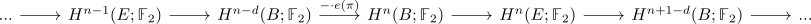
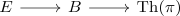
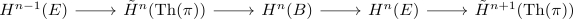
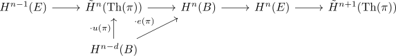

Gysin sequence with F2 coefficients
Proposition
Let $\pi: E \rightarrow B$ be a spherical fibration of rank $d-1$. Then the $\mathbb{F}_2$ gysin sequence is defined as long exact sequence

where the map $- \cdot e(\pi)$ is the thom isomorphism in F2
Proof
consider the cofiber sequence

which induces a long exact sequence on reduced cohomology

where applying the thom isomorphism gives

see: